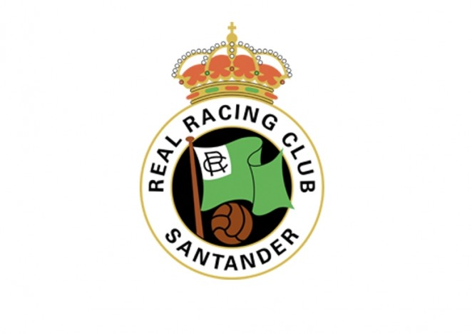

Real Racing Club De Santander |
| DELANTEROS | Nicola Zigic |
|---|---|
| Pedro Munitis | |
| Paco Gento | MEDIOCENTROS | Emilio Amavisca |
| Quique Setien | |
| PORTEROS | Jose Maria Ceballos |
Momentos inolvidables!!HistoriaIniciosEn 1929 se crea por fin un campeonato que engloba a equipos de todo el territorio del estado. Los elegidos son 10; F. C. Barcelona, R. C. D. Español, C. D. Europa, Real Madrid, Athlétic Club de Madrid, Athletic Club de Bilbao, Arenas Club, Real Sociedad, Real Unión Club y por supuesto el Racing. En las dos primeras campañas se pasaron apuros, e incluso tuvo que disputar una promoción contra el Sevilla F. C. la primera de ellas. La tercera temporada, el Racing se convierte en uno de los grandes del panorama nacional, siendo imbatible sobre todo en El Sardinero, por lo que se empezó a conocer al feudo racinguista como "el huerto del francés" recordando a un asesino francés que enterraba a sus víctimas en un huerto. El Racing fue dirigido en esta época por entrenadores británicos, como O´Connell, Firth y Galloway, que dieron un aire británico al equipo. Este equipo hizo vibrar a la afición durante los nueve años consecutivos que se mantuvo en Primera, al grito del "¡ra!, ¡ra!, ¡ra!, que tan famoso hicieron los asistentes a la legendaria “gradona de los malditos”. 2008 El año de la UEFAEl fichaje de Marcelino García Toral sería providencial para conseguir uno de los sueños más perseguidos del Racing en los últimos años: la clasificación para disputar la Copa de la U. E. F. A. El equipo, amparándose en una sólida defensa, supo mantener posiciones en la zona alta de la clasificación durante un buen trecho de la competición, especialmente al final. A falta de ocho partidos, ocupaba la quinta plaza con una holgada ventaja sobre el R. C. D. Mallorca que también aspiraba a jugar en Europa. Pero el denominado mal de altura ocasionó un bache agravado con la derrota en Baleares. Finalmente, en el último partido jugado en Santander contra el C. A. Osasuna, un gol de Iván Bolado dio la victoria a los cántabros obteniendo la sexta plaza que permitía el sueño europeo, tan deseado de la afición cántabra. Además, durante la temporada, el equipo lograría otro hecho jamás alcanzado, como fue clasificarse para las semifinales de la Copa del Rey tras eliminar al Athletic Club de Bilbao, cayendo posteriormente frente al Getafe C. F. Planton historicoLos jugadores del Racing de Santander se unieron abrazados junto al círculo central nada más darse el pitido inicial del partido de vuelta de los cuartos de final de la Copa del Rey contra la Real Sociedad, que finalmente no se disputó. La plantilla del Racing comunicó tres dias antes del encuentro su decisión irrevocable de no jugar si el Consejo de Administración del club, con su presidente, Ángel Lavín, a la cabeza, no dimitía. Así, nada más sonar el pitido inicial, los jugadores se reunieron abrazados junto al círculo central para dejar clara su intención de no jugar. Mientras tanto, los jugadores de la Real se pasaban la pelota en su campo. Segundos después, el árbitro señaló la suspensión del partido cuando la pelota se marchó por línea de banda y nadie del Racing acudió a sacar. Los jugadores llevaban varios meses sin cobrar su salario, "pese a las promesas de pago llevadas a cabo por el presidente". El escaso público que ha acudido a este partido de vuelta de los cuartos de final de la Copa del Rey aplaudió la acción de los jugadores y se volvió contra el palco para pedir, una vez más, que se vayan los actuales dirigentes del Racing. Finalmente este valiente e historico gesto por parte de los jugadores acabó provocando la marcha de aquella nefasta junta directiva. Paginas de compañeros
|